Serviço de Mapas na Web - Geoserver¶
Contents
Uma das principais componentes de um solução webgis é o servidor de mapas. O servidor de mapas é o responsavel por processar todas as fontes de dados presentes em diferentes tipos de bases, sejam elas arquivo, banco de dados, serviços na web e outros. Os dados processados são organizados na estrutura de layers e estas estarão disponiveis na web, através do protocolo HTTP, para serem consumidas no formato de imagem ou textual(vetores).
A OGC(Open Geospatial Consortium - http://www.ogc.org) regulamenta diversos padrões e formatos com especificações abertos para serem utilizados omo base nos OGC WebServices. Dentre estes serviços podemos destacar o WMS(Web Map Service), WFS(Web Feature Service) e o WCS(Web Coverage Services) que iremos trabalhar durante este modulo do roteiro.
No mundo opensource existem diversos servidores de mapas disponíveis onde podemos destacar o mapserver(http://umnmapserver.org) e geoserver(http://geoserver.org), ambos mantidos pela OSGEO(http://osgeo.org). O mapserver é considerado um dos mais antigos servidores de mapas opensource, escrito em c/c++ e amplamente utilizado. Não iremos abordar o mapserver neste roteiro.
Geoserver é um servidor de mapas opensource escrito em Java que possibilita aos seus usuários o compartilhamento e edição de dados geoespaciais. Concebido sob uma otica de interoperabilidade de informações a partir do uso massivo de padrões abertos o geoserver hoje é considerado um dos melhores softwares do seu seguimento. A partir de uma interface totalmente web de gerenciamento, com alguns clicks e pouco entendimento já é possível publicar uma camada de dados geográficos na web.
Durante este capítulo iremos abordar assuntos práticos, totalmente direcionados a configuração e disponibilização de camadas de dados geográficos na web. Como de praxe, sem muita conversa vamos ao que interessa!
Inicializando o Geoserver¶
Para poupar tempo, estamos utilizando o geoserver instalado na distribuição LIVE DVD OSGEO. Não iremos precisar seguir nenhum passo de instalação, apenas configurar o que for necessário para o nosso trabalho. Vamos inicializar o geoserver e fazer as primeiras demonstrações.
- Acessar a opção no menu Geospatial >> Web Services >> Start Geoserver
- Se tudo correr bem uma tela com um OK deve surgir
O geoserver disponibiliza toda a sua interface de administração em formato web. Para iniciarmos as nossas configurações vamos efetuar o login como administrador do geoserver.
- Usuario: admin
- Senha: geoserver
Na proxima sessão vamos iniciar configurando as nossas camadas.
Configurando Layer Mundo¶
Vamos criar nesta sessão as nossas camadas que serão utilizadas como base de fundo para os nossos mapas(BASE LAYER) e tambem como base de sobreposição.
- A nossa camada mundo é composta de um arquivo raster com uma imagem de satelite no formato tiff e um arquivo shapefile com os poligonos de todos os países do planeta. Vamos abrir a pasta ~/Desktop/GeoDojoEnv/data/world
- Agora vamos copiar a pasta world para a pasta ~/Desktop/GeoDojoEnv/geoserver_data_dir/data/
- Vamos criar um namespace geodojo para o nosso roteiro para que tudo fique centralizado nele.


Vamos criar um novo datastore para adicionar os arquivos que irão compor a camada mundo.
4.1. Primeiro vamos criar um datastore para o arquivo shapefile
- Acessando opção para criar um novo datastore shapefile
- 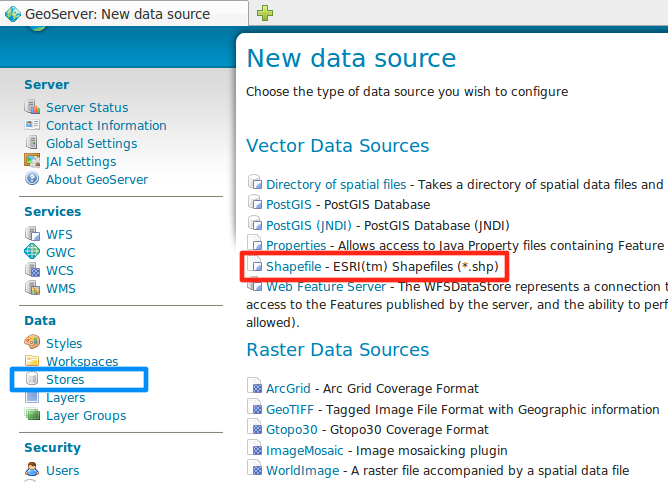
- Configurando o datastore shapefile
- 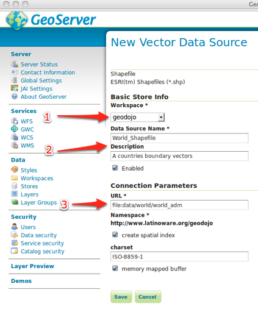
- Datasource criado e pronto para a publicação dos seus dados
- 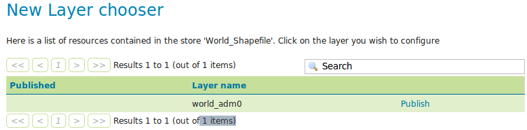
4.2. Vamos criar um outro datastore para o arquivo raster
- Acessando opção para criar um novo datastore raster
- 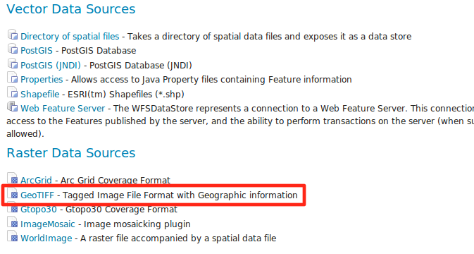
- Configurando o datastore raster
- 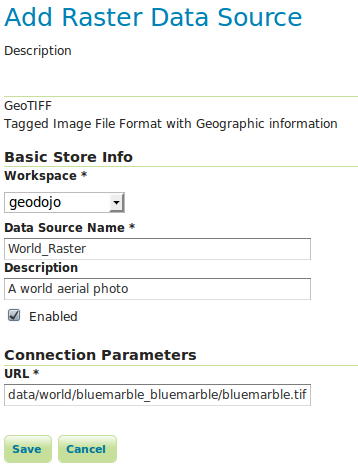
- Datasource criado e pronto para a publicação dos seus dados
- 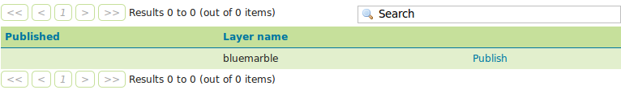
4.3. Vamos publicar uma nova layer com os dados do nosso shapefile datastore que acabamos de configurar
- Acessando opção para criar nova layer
- 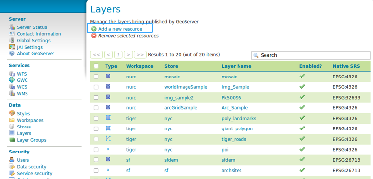
- Configurando a nova layer. Atentar para a geração dos enquadramentos
- 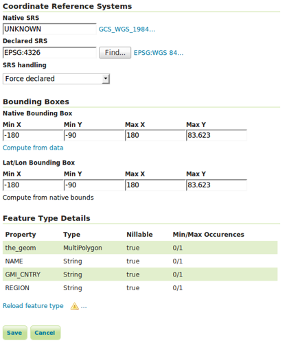
4.4. Vamos publicar a layer com os dados do datastore raster
- Acessando opção para criar nova layer
- 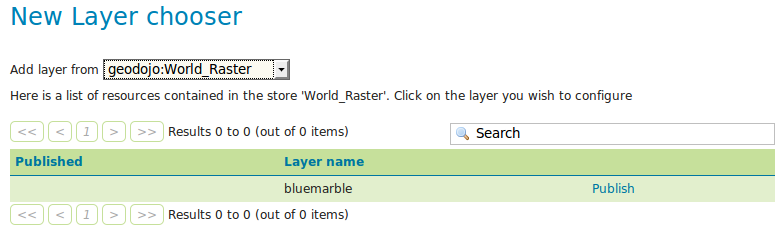
- Configurando a nova layer
- 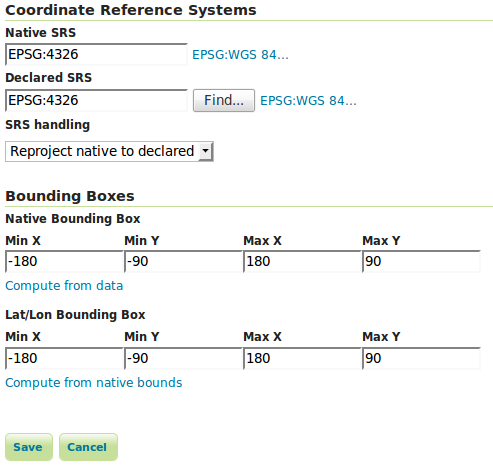
Apos a criação de datastore e publicação dos dados no formato de serviço, podemos testar se tudo está funcionando corretamente. O geoserver disponibiliza uma ferramenta chamada LayerPreview onde é possível consumir os serviços e testa-los.
- Acessando a ferramenta layer preview
- 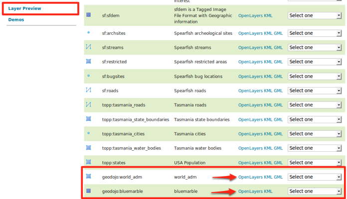
- Visualizando a camada mundo vetorial publicada
- 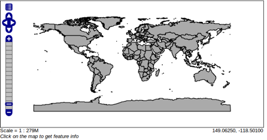
- Visualizando a camada mundo raster publicada
- 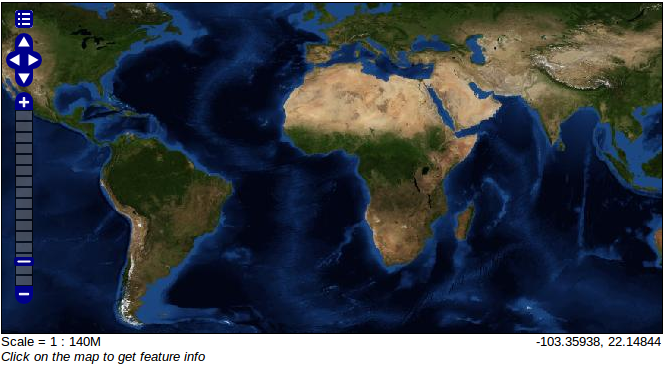
- Vamos precisar agrupar as duas camadas em apenas uma para poupar requisições ao servidor de aplicação e compor a nossa camada base. Para isso vamos usar o recurso do geoserver denominado LayerGroup
- Acessando a funcionalidade para a criação de um layer group.
- 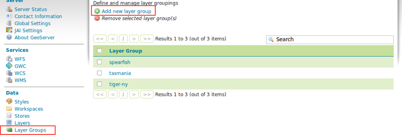
- Agrupando as camadas. Atente para a sobreposição correta.
- Agora vamos visualizar a nossa nova camada que na verdade é uma agregação de camadas.
O próximo passo é estilizar a camada vetorial mundo. Note que da forma atual, o preenchimento dos poligonos está sobrepondo a camada raster. A nossa layer tambem não possui nenhuma label com os nomes dos paises. O geoserver utiliza o padrão SLD para definir estilos visuais de mapas.
Dica para quem quiser aprofundar os estudos no SLD http://tinyurl.com/34oqolf
Para facilitar o trabalho neste tutorial, já existe um arquivo SLD prontinho que foi criado especialmente para atender a nossa camada mundo. Vamos aprender nesta etapa como se define um estilo no geoserver.. Tomem cuidado pois é algo muitoooooo dificil! :)
- Arquivo SLD
<?xml version="1.0" encoding="UTF-8"?> <sld:StyledLayerDescriptor xmlns="http://www.opengis.net/sld" xmlns:sld="http://www.opengis.net/sld" xmlns:ogc="http://www.opengis.net/ogc" xmlns:gml="http://www.opengis.net/gml" version="1.0.0"> <sld:UserLayer> <sld:LayerFeatureConstraints> <sld:FeatureTypeConstraint/> </sld:LayerFeatureConstraints> <sld:UserStyle> <sld:Name>Default Styler</sld:Name> <sld:Title/> <sld:IsDefault>1</sld:IsDefault> <sld:FeatureTypeStyle> <sld:Name>simple</sld:Name> <sld:FeatureTypeName>Feature</sld:FeatureTypeName> <sld:SemanticTypeIdentifier>generic:geometry</sld:SemanticTypeIdentifier> <sld:SemanticTypeIdentifier>simple</sld:SemanticTypeIdentifier> <sld:Rule> <sld:PolygonSymbolizer> <sld:Stroke> <sld:CssParameter name="stroke">#1A1A1A</sld:CssParameter> <sld:CssParameter name="stroke-opacity">0.5</sld:CssParameter> </sld:Stroke> </sld:PolygonSymbolizer> <sld:TextSymbolizer> <sld:Label> <ogc:PropertyName>NAME</ogc:PropertyName> </sld:Label> <sld:Font> <sld:CssParameter name="font-family">Sans</sld:CssParameter> <sld:CssParameter name="font-size">8.0</sld:CssParameter> <sld:CssParameter name="font-style">normal</sld:CssParameter> <sld:CssParameter name="font-weight">bold</sld:CssParameter> </sld:Font> <sld:LabelPlacement> <sld:PointPlacement> <sld:AnchorPoint> <sld:AnchorPointX> <ogc:Literal>0.5</ogc:Literal> </sld:AnchorPointX> <sld:AnchorPointY> <ogc:Literal>0.5</ogc:Literal> </sld:AnchorPointY> </sld:AnchorPoint> </sld:PointPlacement> </sld:LabelPlacement> <Halo> <Radius> <ogc:Literal>2</ogc:Literal> </Radius> <sld:Fill> <sld:CssParameter name="fill">#FFFFFF</sld:CssParameter> <sld:CssParameter name="fill-opacity">0.65</sld:CssParameter> </sld:Fill> </Halo> <sld:Fill> <sld:CssParameter name="fill">#00000F</sld:CssParameter> </sld:Fill> <sld:VendorOption name="spaceAround">2</sld:VendorOption> </sld:TextSymbolizer> </sld:Rule> </sld:FeatureTypeStyle> </sld:UserStyle> </sld:UserLayer> </sld:StyledLayerDescriptor>
- Acessando a funcionalidade para adicionar um novo estilo
- 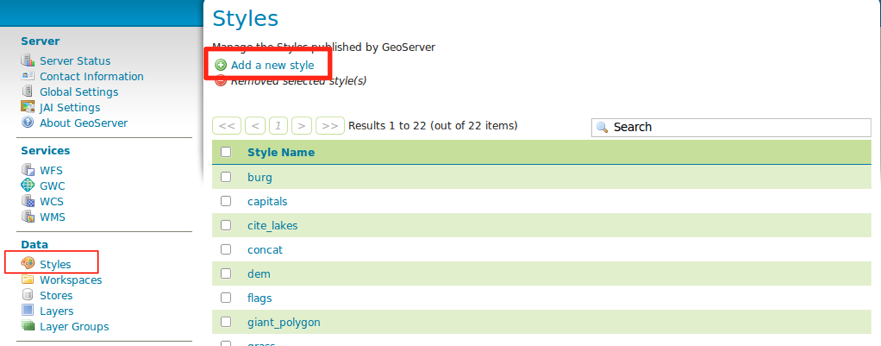
- Copiar e colar o xml SLD acima.
- 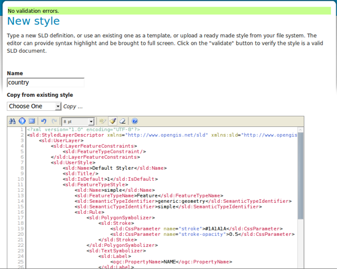
- Acessar a layer group e definir o estilo country para a camada vetorial
- 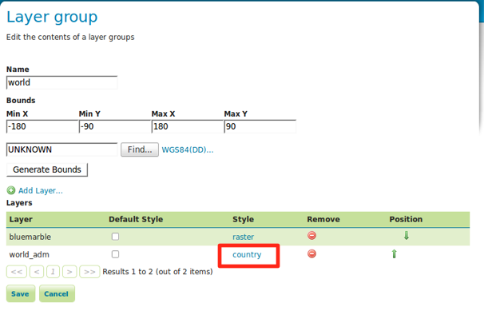
- Verificar o resultado no layer preview
- 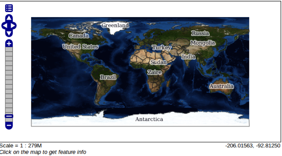
Configurando Layers Postgis¶
Na seção anterior configuramos a camada mundo a partir de arquivos de dados geograficos. Nesta seção vamos aprender a configurar camadas a partir de tabelas de dados geográficos presentes na base postgis.
Primeiramento vamos criar um novo datastore que vai apontar para o nosso banco de dados geodojo
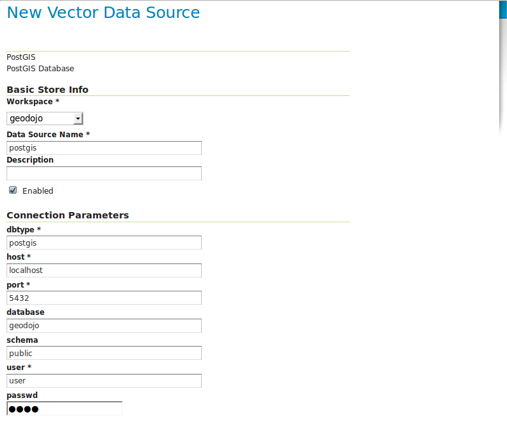Em seguida adicionar o datasource Postgis. Será exibida uma lista com todas as tabelas e views que possuem colunas geograficas presente no base de dados.
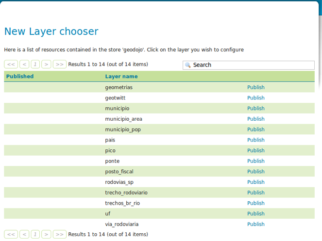Vamos iniciar a publicação de algumas tabelas que configuramos anteriormente no Postgis. Note que algumas tabelas são derivadas de operações espaciais realizadas logo será possível visualizar o resultado.
Camada Limites Politicos¶
A camada de limites politicos consiste na divisão dos estados e divisão de municipios.
- Publicar as layers UF e Municipio.
- Resultado da camada de UF
- 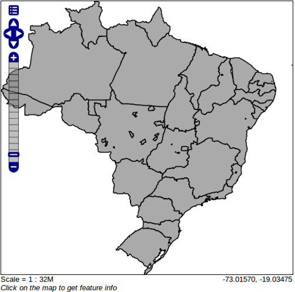
- Resultado da camada de Municipio
- 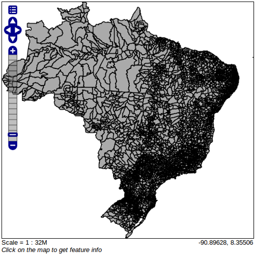
- Criar uma layer group com as layers uf e municipio
- Definir o estilo SLD para a camada UF.
<?xml version="1.0" encoding="UTF-8"?>
<sld:StyledLayerDescriptor xmlns="http://www.opengis.net/sld" xmlns:sld="http://www.opengis.net/sld" xmlns:ogc="http://www.opengis.net/ogc" xmlns:gml="http://www.opengis.net/gml" version="1.0.0">
<sld:UserLayer>
<sld:LayerFeatureConstraints>
<sld:FeatureTypeConstraint/>
</sld:LayerFeatureConstraints>
<sld:UserStyle>
<sld:Name>Default Styler</sld:Name>
<sld:Title/>
<sld:IsDefault>1</sld:IsDefault>
<sld:FeatureTypeStyle>
<sld:Name>simple</sld:Name>
<sld:FeatureTypeName>Feature</sld:FeatureTypeName>
<sld:SemanticTypeIdentifier>generic:geometry</sld:SemanticTypeIdentifier>
<sld:SemanticTypeIdentifier>simple</sld:SemanticTypeIdentifier>
<sld:Rule>
<sld:PolygonSymbolizer>
<sld:Stroke>
<sld:CssParameter name="stroke">#1B9E77</sld:CssParameter>
<sld:CssParameter name="stroke-opacity">0.75</sld:CssParameter>
</sld:Stroke>
</sld:PolygonSymbolizer>
</sld:Rule>
<sld:Rule>
<sld:MinScaleDenominator>1.180186E7</sld:MinScaleDenominator>
<sld:TextSymbolizer>
<sld:Label>
<ogc:PropertyName>nome</ogc:PropertyName>
</sld:Label>
<sld:Font>
<sld:CssParameter name="font-family">Sans</sld:CssParameter>
<sld:CssParameter name="font-size">8.0</sld:CssParameter>
<sld:CssParameter name="font-style">normal</sld:CssParameter>
<sld:CssParameter name="font-weight">bold</sld:CssParameter>
</sld:Font>
<sld:LabelPlacement>
<sld:PointPlacement>
<sld:AnchorPoint>
<sld:AnchorPointX>
<ogc:Literal>0.5</ogc:Literal>
</sld:AnchorPointX>
<sld:AnchorPointY>
<ogc:Literal>0.5</ogc:Literal>
</sld:AnchorPointY>
</sld:AnchorPoint>
</sld:PointPlacement>
</sld:LabelPlacement>
<Halo>
<Radius>
<ogc:Literal>2</ogc:Literal>
</Radius>
<sld:Fill>
<sld:CssParameter name="fill">#FFFFFF</sld:CssParameter>
<sld:CssParameter name="fill-opacity">0.65</sld:CssParameter>
</sld:Fill>
</Halo>
<sld:Fill>
<sld:CssParameter name="fill">#00000F</sld:CssParameter>
</sld:Fill>
<sld:VendorOption name="spaceAround">2</sld:VendorOption>
</sld:TextSymbolizer>
</sld:Rule>
</sld:FeatureTypeStyle>
</sld:UserStyle>
</sld:UserLayer>
</sld:StyledLayerDescriptor>
- Definir o estilo SLD para a camada Municipio.
<?xml version="1.0" encoding="UTF-8"?>
<sld:StyledLayerDescriptor xmlns="http://www.opengis.net/sld" xmlns:sld="http://www.opengis.net/sld" xmlns:ogc="http://www.opengis.net/ogc" xmlns:gml="http://www.opengis.net/gml" version="1.0.0">
<sld:UserLayer>
<sld:LayerFeatureConstraints>
<sld:FeatureTypeConstraint/>
</sld:LayerFeatureConstraints>
<sld:UserStyle>
<sld:Name>Default Styler</sld:Name>
<sld:Title/>
<sld:IsDefault>1</sld:IsDefault>
<sld:FeatureTypeStyle>
<sld:Name>simple</sld:Name>
<sld:FeatureTypeName>Feature</sld:FeatureTypeName>
<sld:SemanticTypeIdentifier>generic:geometry</sld:SemanticTypeIdentifier>
<sld:SemanticTypeIdentifier>simple</sld:SemanticTypeIdentifier>
<sld:Rule>
<sld:MaxScaleDenominator>1.280186E7</sld:MaxScaleDenominator>
<sld:PolygonSymbolizer>
<sld:Fill>
<sld:CssParameter name="fill">#FFF4C7</sld:CssParameter>
<sld:CssParameter name="fill-opacity">0.5</sld:CssParameter>
</sld:Fill>
<sld:Stroke>
<sld:CssParameter name="stroke">#B9BB7B</sld:CssParameter>
</sld:Stroke>
</sld:PolygonSymbolizer>
</sld:Rule>
<sld:Rule>
<sld:MaxScaleDenominator>1011147.0</sld:MaxScaleDenominator>
<sld:TextSymbolizer>
<sld:Label>
<ogc:PropertyName>nome</ogc:PropertyName>
</sld:Label>
<sld:Font>
<sld:CssParameter name="font-family">Sans</sld:CssParameter>
<sld:CssParameter name="font-size">5.0</sld:CssParameter>
<sld:CssParameter name="font-style">normal</sld:CssParameter>
<sld:CssParameter name="font-weight">bold</sld:CssParameter>
</sld:Font>
<sld:LabelPlacement>
<sld:PointPlacement>
<sld:AnchorPoint>
<sld:AnchorPointX>
<ogc:Literal>0.5</ogc:Literal>
</sld:AnchorPointX>
<sld:AnchorPointY>
<ogc:Literal>0.5</ogc:Literal>
</sld:AnchorPointY>
</sld:AnchorPoint>
</sld:PointPlacement>
</sld:LabelPlacement>
<Halo>
<Radius>
<ogc:Literal>2</ogc:Literal>
</Radius>
<sld:Fill>
<sld:CssParameter name="fill">#FFFFFF</sld:CssParameter>
<sld:CssParameter name="fill-opacity">0.65</sld:CssParameter>
</sld:Fill>
</Halo>
<sld:Fill>
<sld:CssParameter name="fill">#00000F</sld:CssParameter>
</sld:Fill>
<sld:VendorOption name="spaceAround">1</sld:VendorOption>
</sld:TextSymbolizer>
</sld:Rule>
</sld:FeatureTypeStyle>
</sld:UserStyle>
</sld:UserLayer>
</sld:StyledLayerDescriptor>
- O resultado final deve ser algo parecido com as screens abaixo
Camada Rodovias Paulista¶
- Publicar a layer rodovias_sp
- Definir estilo para a camada.
<?xml version="1.0" encoding="UTF-8"?>
<StyledLayerDescriptor version="1.0.0" xsi:schemaLocation="http://www.opengis.net/sld StyledLayerDescriptor.xsd"
xmlns="http://www.opengis.net/sld" xmlns:ogc="http://www.opengis.net/ogc" xmlns:xlink="http://www.w3.org/1999/xlink"
xmlns:xsi="http://www.w3.org/2001/XMLSchema-instance">
<NamedLayer>
<Name>Simple Roads</Name>
<UserStyle>
<Title>Default Styler for simple road segments</Title>
<Abstract>Light red line, 2px wide</Abstract>
<FeatureTypeStyle>
<Rule>
<Title>Roads</Title>
<LineSymbolizer>
<Stroke>
<CssParameter name="stroke">
<ogc:Literal>#AA3333</ogc:Literal>
</CssParameter>
<CssParameter name="stroke-width">
<ogc:Literal>2</ogc:Literal>
</CssParameter>
</Stroke>
</LineSymbolizer>
<TextSymbolizer>
<Label>
<ogc:PropertyName>sigla</ogc:PropertyName>
</Label>
<Font>
<CssParameter name="font-family">Times New Roman</CssParameter>
<CssParameter name="font-style">Normal</CssParameter>
<CssParameter name="font-size">10</CssParameter>
</Font>
<LabelPlacement>
<LinePlacement>
<PerpendicularOffset>10</PerpendicularOffset>
</LinePlacement>
</LabelPlacement>
<Halo>
<Radius>
<ogc:Literal>2</ogc:Literal>
</Radius>
<Fill>
<CssParameter name="fill">#FFFFFF</CssParameter>
<CssParameter name="fill-opacity">0.85</CssParameter>
</Fill>
</Halo>
<Fill>
<CssParameter name="fill">#000000</CssParameter>
</Fill>
<VendorOption name="group">yes</VendorOption>
</TextSymbolizer>
</Rule>
</FeatureTypeStyle>
</UserStyle>
</NamedLayer>
</StyledLayerDescriptor>
- Resultado
Camada GeoTwitter¶
Inserir dados na tabela geotwitt:
insert into geotwitt(autor,mensagem,the_geom) values ('rafikdabahia','Estamos no @latinoware',ST_GeomFromText('POINT(-54.5820 -25.4607)',4326)); insert into geotwitt(autor,mensagem,the_geom) values ('rafikdabahia','Regional SERPRO Brasilia',ST_GeomFromText('POINT(-47.87242 -15.78782)',4326));Definir a layer geotwitt
Definir o estilo SLD twitt
<?xml version="1.0" encoding="ISO-8859-1"?>
<StyledLayerDescriptor version="1.0.0" xmlns="http://www.opengis.net/sld" xmlns:ogc="http://www.opengis.net/ogc"
xmlns:xlink="http://www.w3.org/1999/xlink" xmlns:xsi="http://www.w3.org/2001/XMLSchema-instance"
xsi:schemaLocation="http://www.opengis.net/sld http://schemas.opengis.net/sld/1.0.0/StyledLayerDescriptor.xsd">
<NamedLayer>
<Name>Default Point</Name>
<UserStyle>
<Title>Default point</Title>
<Abstract>A sample style that just prints out a 6px wide red square</Abstract>
<FeatureTypeStyle>
<!--FeatureTypeName>Feature</FeatureTypeName-->
<Rule>
<Title>Twitter Point</Title>
<PointSymbolizer>
<Graphic>
<ExternalGraphic>
<OnlineResource xlink:type="simple" xlink:href="twitter.png" />
<Format>image/png</Format>
</ExternalGraphic>
<Size>24</Size>
</Graphic>
</PointSymbolizer>
</Rule>
</FeatureTypeStyle>
</UserStyle>
</NamedLayer>
</StyledLayerDescriptor>
- O resultado final deve ser algo parecido com a figura abaixo
Finalizamos o capitulo sobre geoserver. O próximo capítulo vai contemplar a aplicação java propriamente dita com a utilização de CDI, JSF e OL4JSF.